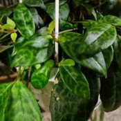

| Nom et photo | Exposition | Arrosage | Rempotage | Saisons |
|---|---|---|---|---|
| Aeschynanthus marmoratus  |
Très lumineuse sans soleil direct. Soleil d'hiver sans danger. | Modéré en laissant sécher entre 2 arrosages. Air pas trop sec. Adapter en hiver. | Terreau plantes d'intérieur. Pot en plastique de taille moyenne suspendu. | Été: Intérieur et extérieur. Hiver: Intérieur pièce pas trop fraîche. |